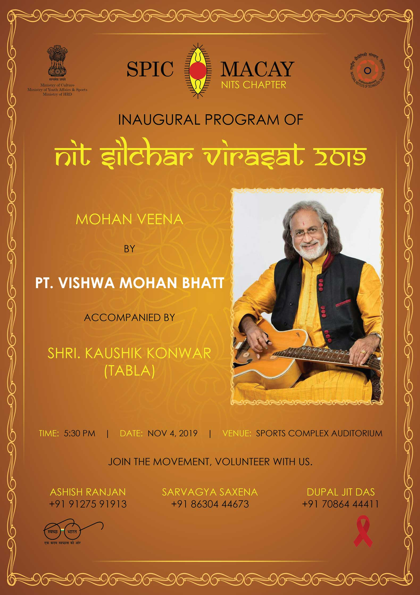
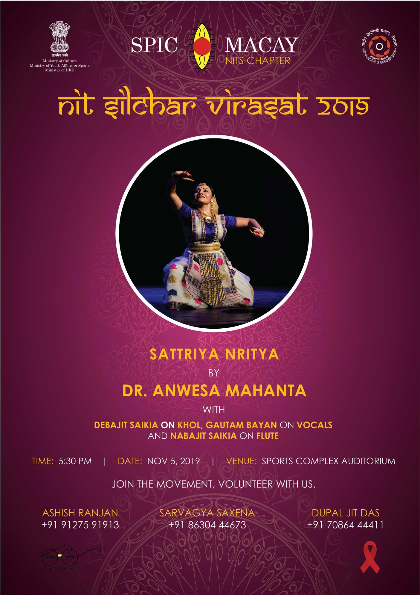
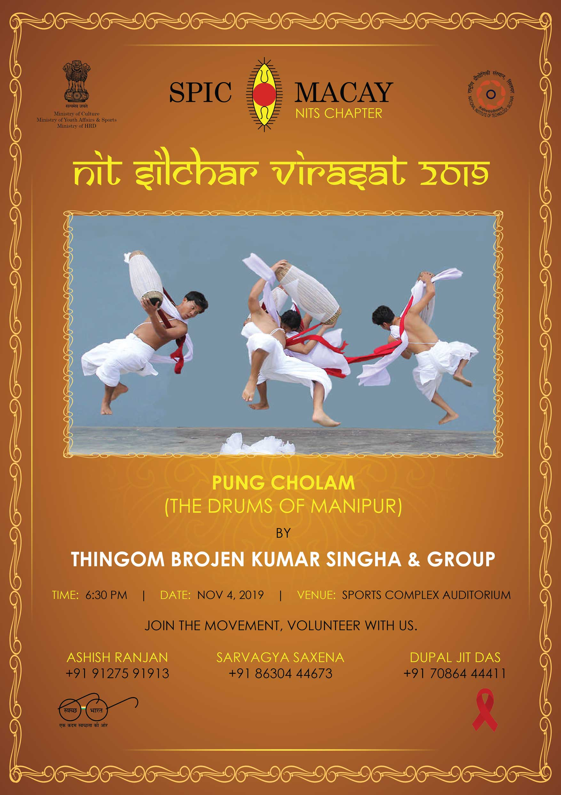
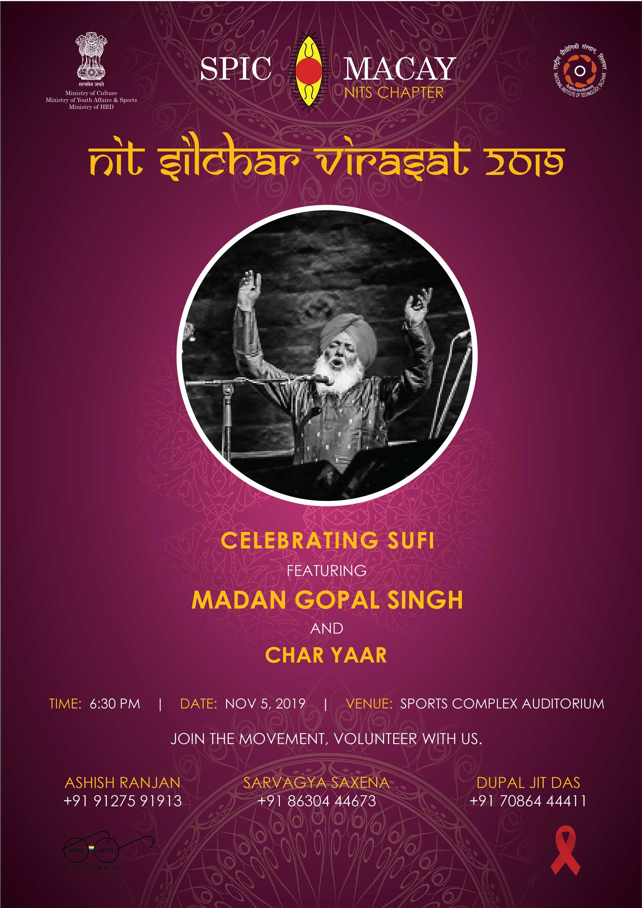
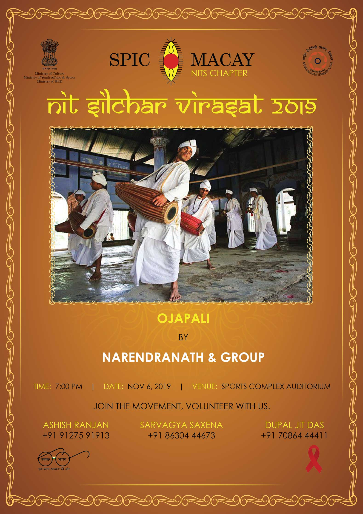
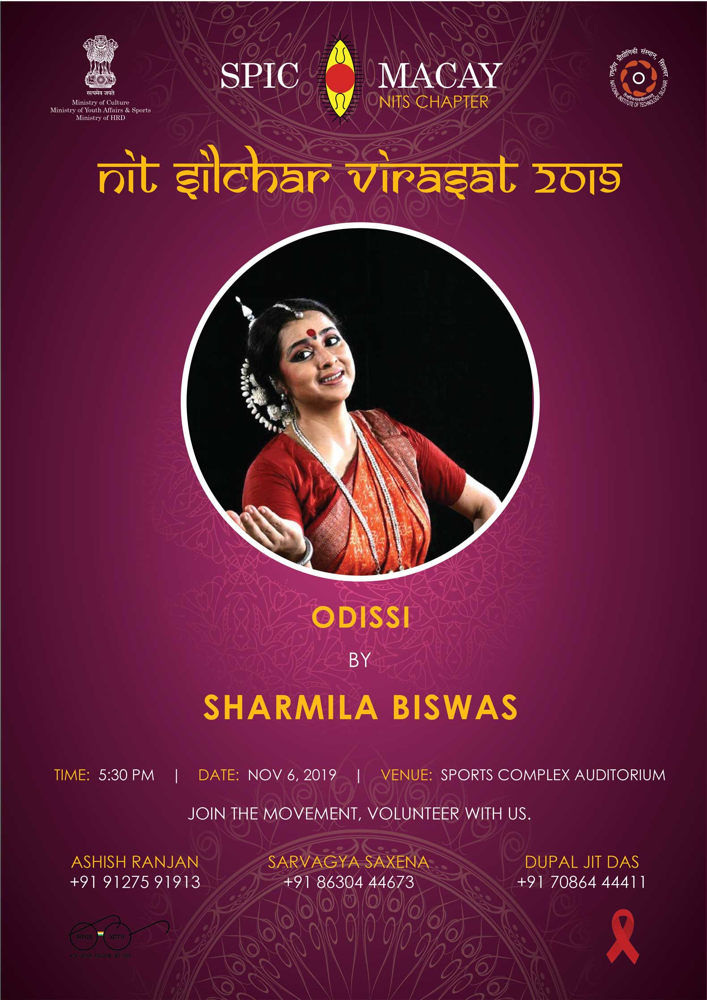
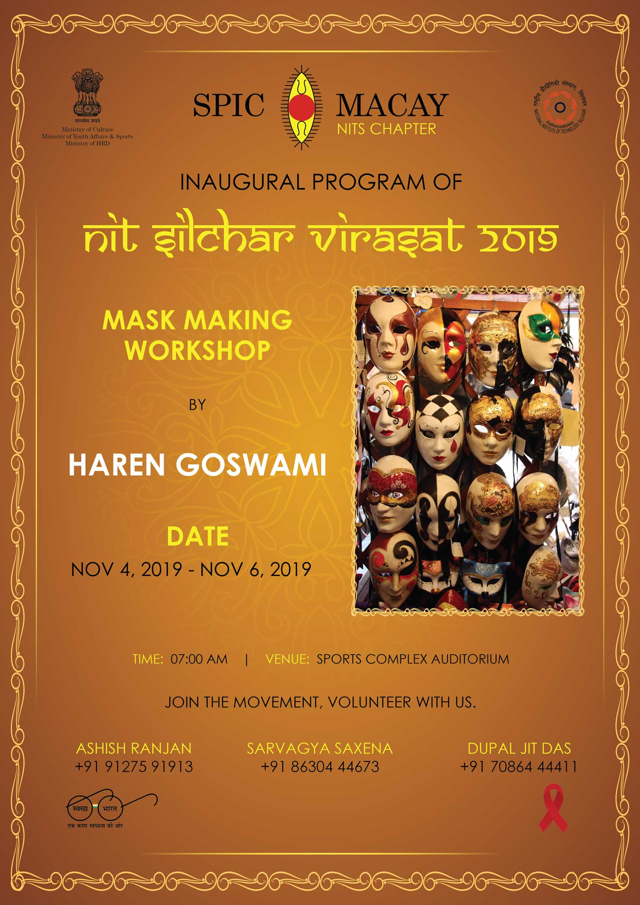
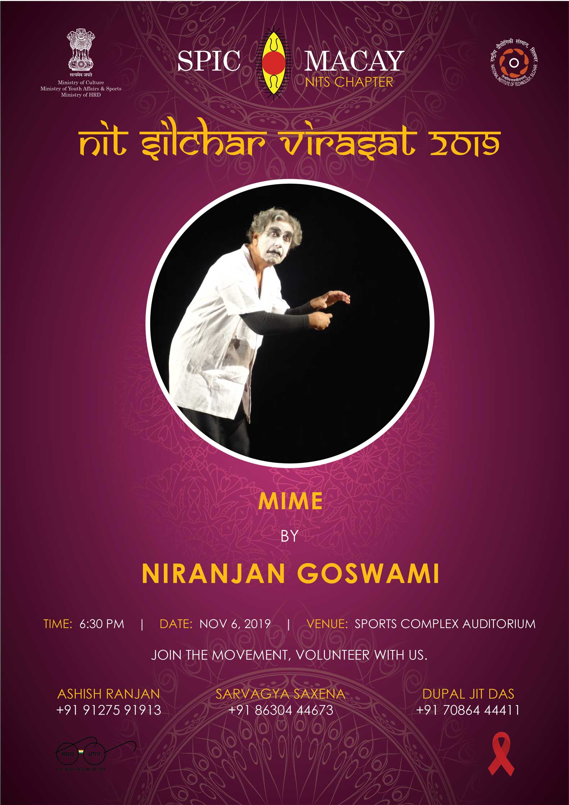

Creator of the Mohan Veena and winner of the Grammy Award, Vishwa Mohan Bhatt sir has enchanted the world with his serene yet conflagrant music. He had been playing world fusion music even before it had a name. To play his extraordinary style of music which is a mélange of eastern and western style, the Indian musician invented the Mohan Veena which is a prodigious congruence of sitar, sarod and veena techniques. With blinding speed and faultless legato, Bhatt sir is undoubtedly one of the most expressive and versatile slide players in the world. Being a powerhouse performer, his electrifying performance always captivates the audience by carrying the herculean task of glorifying and popularizing Indian culture and music throughout the world. With his sheer virtuosity and limitless supply of melodies, he won the highest music award of the world, the Grammy Award in 1994 along with Ry Cooder for their World Music Album, 'A Meeting by the River '.
Pandit Vishwa Mohan Bhatt has been conferred the Padma Bhushan, Padma Shri, Grammy as well as many other accolades, besides Music Natak Academy, Music Scientist, National Tansen Award, Tantric Emperor, Rajasthan Ratna and Global Music Award twice. The prestigious St. Peterburg University has given him the honorary degree.


Sattriya or Sattriya Nritya, is a major Indian classical dance that traces its roots to ancient drama and music texts of India, particularly the Natya Shastra. It is a dance-drama performance art with origins in the Krishna-centered Vaishnavism monasteries of Assam, and attributed to the 15th century Bhakti movement scholar and saint named Srimanta Sankardev. One-act plays of Sattriya are called Ankiya Nat, which combines the aesthetic and the religious aspects through ballad, dance and drama. The plays are usually performed in the dance community halls (Namghar) of monastery temples (Sattras). The themes played relate to Krishna and Radha, sometimes other incarnationa of Vishnu such as Rama and Sita.
A devoted and propitious young exponent of Sattriya Dance, belonging to the Vaishnava monastery of Assam, Dr. Anwesa Mahanta started her formal lessons in Sattriya from her early childhood under the guidance of the eminent maestro and a Sangeet Natak Akademi Awardee Bayanacharya Ghanakanta Bora. She has been an active performer since 2001, presenting Sattriya in its solo form. She has performed extensively across India and also aborad, appearing at many prestigious dance festivals.
In 2018, she was conferred with the prestigious Bharat Kala Ratna Award, 2018 by the Navanittam Cultural Trust, India. She has been described as the 'renaissance girl of Sattriya dance'. As a dedicated performer and interpreter of one of the oldest living dance traditions of India and through her efforts in research and publications, she has contributed significantly to the wider understanding of this intangible heritage of Assam.
Also known as Mrindanga Kirtan or Dhumal or Drum Dance, Pung Cholom is a famous dance style of Manipur that involves dancing and playing a drum at the same time. The hand beaten drum is known as pung and was introduced by Khuyoi Tompok, who ruled Manipur between 154 and 264 AD. The dance form is performed exclusively by men. The dancers showcase a beautiful blend of grace and acrobatics without breaking the rhythm or flow of music. The dance performance begins with a gentle note and eventually builds up to a thunderous climax. It borrows elements from traditional Manipuri martial arts like Thang Ta and Sarit Sarak. Nata Sankirtan, an important ceremonial dance in Manipuri culture, has the pung playing generously throughout.
A brilliant young pung player Brojen Singha, a disciple of Kalavati Devi from Cachar, has been regularly visiting Dhaka to train Ghoramar artists and has trained a number of artists in pung playing. From Shadhona’s Kolpotoru section, Brojen Singha and his group have performed at numerous platforms, enthralling people with ’Pung Cholom’ which has earned international acclamation for its charming artistic display.


Sufism, as the mystical dimension of Islam, preaches peace, tolerance and pluralism, while encouraging music as a way of deepening one's relationship with the Omnipresent. The pain of separation from the Creator is at the core of Sufi lyrics and music; and hence the intense longing to dissolve the physical realm and transcend into the spiritual universe with Sama'a, the practice of listening to music, chanting and whirling, and finally culminating in spiritual ecstasy (wajd). Sound and music is thus central for the core experience of Sufism. Sufi music therefore is the music of the 'soul' by the 'soul' and for the 'soul'.
Madan Gopal Singh is a renowned popular Sufi musician who has performed internationally and has been widely recognised for his luminous compositions of Shah Hussain, Rumi, Bulleh Shah and Sultan Bahu as well as contemporary poets. Born in Amritsar and based in Delhi, he and his ensemble 'Chaar Yaar/Faqiri Quartet', comprising, Madan Gopal Singh - the ace guitarist and banjo player, Deepak Castelino - the young and soulful sarod player, Pritam Ghosal - an energetic multiple percussionist and Ajmad Khan, has been entrhalling the world with the tunes of Sufi sangeet for fifteen years now.
Madan Gopal Singh wrote dialogues and lyrics for critically acclaimed Punjabi film Qissa by Anup Singh. Singh is a scriptwriter, having written films like Rasayatra on the well-known Hindustani classical vocalist Mallikarjun Mansur – a film that won the National Award for the best short film in 1995. He was invited to the Smithsonian Folklife Festival 2002, Washington as a presenter-performer. In all, he gave/made/conducted 28 concerts, presentations and workshops. He also composed music for Sabiha Sumar's celebrated Khamosh Pani – a French-German-Pakistan coproduction that won the Best Film award at the Locarno Film Festival, 2003.
Originating from the beautiful state of Assam, Ojapali is a native traditional dance form. Believed to be one of the oldest art forms of Assam, this evocative art form is believed to have evolved from Kathakata tradition and is performed in a group. It originally evolved in the Kamata state, in the western and northern parts surrounding river Brahmaputra. Later on, it was contained around Darang area under the patronization of Darangi King Dharmanarayana. The repertoire of this performance consists of songs, dialogues, gesture, improvised acting and dramatization. The group member consisted of an Oja, who leads the performance and four or five Palies, who supplements the performance with continuous rhythm by playing traditional cymbals known as Khuti Tals. Among the Palies, Daina Pali, who stands on the right-hand side of the Oja, takes on an active role and takes the performance forward along with the Oja. Today, Ojapali is largely limited to Darang, Mangaldoi,Shipajhar and some other parts of Tezpur and Udalguri district.
Taking forward the sonorous performances of Ojapali art form is none other than Narendranath and Group. They have spread the Ojapali culture all across Assam and further. Over the years, they have worked with great dedication towards the preservation and development of this native art form. Through their unique storytelling and dramatization, they have spread unique tales and have taken forward the art of Ojapali in the present age.


Originating in the Hindu temples of the eastern coastal state of Odisha, Odissi is one of the pre-eminent classical dance forms of India. Its theoretical base can be traced back to ‘Natya Shastra’, the ancient Sanskrit Hindu text on the performing arts. Traditionally a dance-drama genre of performance art, this dance form includes themes from Vaishnavism and others associated with Hindu gods and goddesses like Shiva, Surya and Shakti.
A noted name in the arena of Indian classical dance, Sharmila Biswas is one of the most eminent Odissi dancers and choreographers of India. Born and brought up in one of the most culturally rich cities of India, Kolkata, she started learning dance from the young age of eight. At the age of sixteen, she started training in Odissi under Guru Muralidharan Majhi and subsequently trained under Guru Kelucharan Mohapatra. Later, she learnt abhinaya from Guru Kalanidhi Narayanan.Her dedication and expertise have not only gained her fame and appreciation in her own country, but also over the world. Over the years, she has participated in performing arts festivals at numerous places, performing both classical Odissi as well as her experimental choreographic works.Her work also includes the Odissi Vision and Movement Center (OVM) in Kolkata, where she is the Artistic Director and trains young dancers. In 2009, she started Poorva Dhara, an annual festival of traditional dances of East and North East India. She has rightfully won and achieved many eminent titles over the years. The Sangeet Natak Academy Award, the highest award for performing artists, was conferred on her by National Academy for Music, Dance and Drama of India.
Among the several workshops to be conducted, the institute is pleased to have Dr. Haren Goswami, under who, a traditional mask making workshop will be organized. Hailing from Majuli district of Assam, Dr. Goswami is a renowned mask maker who has dedicated four decades of his life in practising, preserving and promoting the mask-making tradition of Assam.
He loves to elaborate the variegated history and glory of the mask making culture of Assam, its use and evolution, the significance of masks in Majuli's Raas festival and the attitude of people towards this practice. With Dr. Goswami's advent, an unveiling of the intriguing mask making culture awaits.


The marvellous art form of Mime is the theatrical technique of suggesting action, character or emotion without words, using only gesture, expression and movement. Miming involves acting out a story through body motions, without the use of speech.In Western civilization, the performance of mime originates at its earliest in Ancient Greece. Natya Shastra, an ancient treatise on theatre by Bharata Muni, mentions silent performance, or Mukabhinaya.In recent history, silent comedians like Charlie Chaplin have had a profound influence on comedic mime and may be the best-documented mime in history.Mime is also a popular art form in street theatre. Traditionally, street mimes involve the actors and actresses wearing tight black and white clothing with white facial makeup. Often employed in comical forms, this art form has also been used to communicate serious and important issues over time.
An unparalleled connoisseur in this field is Niranjan Goswami, an Indian mime actor and stage director, credited by many with pioneering the art form of mime in India. He is the founder of the prestigious Indian Mime Theatre, a group promoting the art of Mukhabhinaya (silent acting) Goswami started his career in the late 1960s with Bahurupi, a local theatre group, later joining Rabindra Bharati University for a course in theatre. Through his Indian Mime Theatre, he has spread the artform of mine and performed in many shows worldwide.Furthermore, he actively takes part in teaching mime throughout India and is a visiting professor at the National School of Drama (NSD) and many other theatre institutions. For his stellar achievements, Goswami received the Sangeet Natak Akademi Award in 2002. The Government of India awarded him the fourth highest civilian honour of the Padma Shri, in 2009, for his contributions in the field of the performing arts.